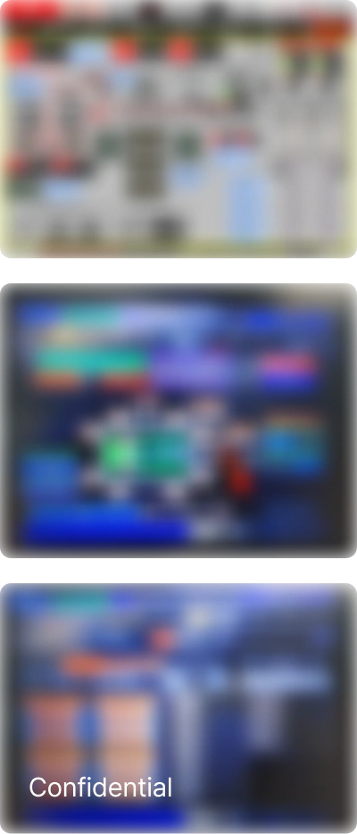
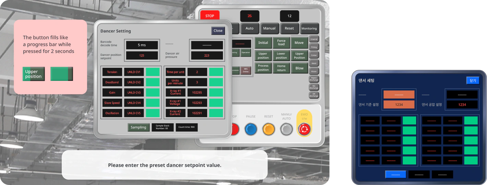

01
Text-heavy and inconsistent screens made training difficult to follow

The training relied heavily on text and reproduced different machine layouts across modules. Learners had to process dense instructions while adapting to a new screen structure in each module, making it harder to find key information and focus on the training.